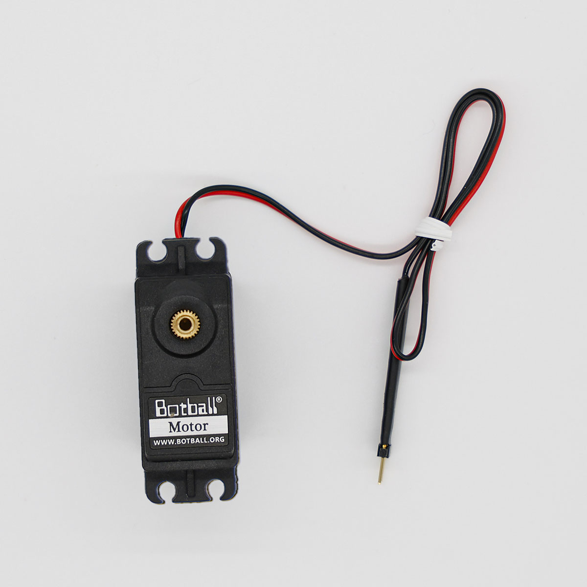

Unit 2 · Big Idea 3
Drive by the Numbers
Student Lab · Touch Botguy with Encoders
Student PIN:
Overview
Until now, your robot drove for a set time and hoped it went the right distance — and last lab proved how inconsistent that can be. Today the robot measures its own wheels. Each motor has a built-in counter that ticks up as it turns. By watching that counter, the robot can drive an exact distance instead of an exact time. You'll use this to drive out from the starting box and touch Botguy — Mission 9.
Core Insight
A robot that can measure its own movement can act precisely. Instead of "drive for one second," it can say "drive until I've turned exactly this far."
By the end of this activity you will be able to:
- Read a motor's encoder with
k.gmpc()and reset it withk.cmpc(). - Write a
whileloop that exits on a number you choose, not just a button. - Build a function that takes an argument so one function can drive any distance.
- Drive a measured distance from the starting box to touch Botguy.
First: Meet the Motor Graph on the Controller
Turn the port-0 wheel one full turn by hand. About how many ticks did the counter change? Write the number you saw.
New This Time: Encoders and a Numeric Loop
Each motor counts how far it has turned, in ticks. Two commands let you use that counter:
The pattern is: clear the counter to zero, start driving, and keep checking the counter until it reaches the distance you want.
We're reading just port 0 for now. Later, we may come back and read both wheels at once to help the robot drive straighter.
Last unit, your loop watched a touch sensor: k.digital(0) was only ever 0 or 1 — two possibilities. This loop watches a counter that climbs through thousands of values: 0, 1, 2, ... all the way up to your target.
The condition k.gmpc(0) < 2000 stays true while the count is below 2000, and flips false the instant it reaches it. The loop isn't waiting for an on/off — it's waiting for a number to grow big enough.
So far your functions ran the same way every time. An argument lets you hand a function a number, so it can do its job differently depending on what you pass in.
Inside the function, ticks stands for whatever number you passed. One function, any distance — no copying and pasting.
Phase 1 — Activate: Counting Your Own Steps

Imagine you're told "walk to the door." You could guess at the time it takes — or you could count your steps. If the door is 10 steps away, you walk until your step count reaches 10, then stop. You're not timing yourself; you're measuring your own movement and stopping at a number.
Think it through
Why is "walk until I've taken 10 steps" more reliable than "walk for 6 seconds"?
The robot's wheel counter is its version of counting steps. What is one "step" for the robot called?
How is counting your steps to a target like the robot counting encoder ticks to a target? Why does measuring movement beat guessing at time?
Phase 2 — Concept: Feedback and Arguments
An Encoder Is the Robot Sensing Itself
Earlier sensors told the robot about the outside world — a wall, a button. An encoder is different: it tells the robot about itself — how far its own wheels have turned. This is called feedback: the robot watches the result of its own action and uses it to decide when to stop.
An Argument Makes One Function Flexible
You've built functions that always did exactly the same thing. An argument is a value you pass into a function to change what it does. Tick_Drive(2000) and Tick_Drive(1000) are the same function doing two different distances. The function is written once; the number makes it flexible.
Why this matters for a real run
To touch Botguy you need one exact distance. But a whole mission needs many different distances. With an argument, you write Tick_Drive() once and call it with whatever number each leg of the trip needs — instead of writing a new function for every distance.
In your own words: what is an argument, and how does Tick_Drive(2000) differ from Tick_Drive(1000) even though it's the same function?
Phase 3 — Plan
The Mission
Mission 9 — Touch Botguy
Start: your robot begins in the right starting box.
Base: drive out and touch Botguy.
Later (bonus): removing Botguy from his enclosure and getting him to the warehouse floor needs an arm — that's a manipulation task for a future lesson. Today is just: drive a measured distance and touch him.
Step 1 — Find Your Target Number
You need to know how many ticks it takes to reach Botguy. Use the motor graph: clear the counter, drive toward Botguy by hand or with a short test, and read the tick count when the robot reaches him. Write your best target.
| Measurement | Your value (ticks) |
|---|---|
Ticks from start box to TOUCHING Botguy |
Step 2 — Plan in Plain English
Describe your program in order — including clearing the counter, the loop, and the brake.
Phase 4 — Build & Run
⚠ Test in your hands first
Hold the robot off the ground and run the program once. Watch the wheels spin and then brake to a stop on their own when the count is reached — before you put it on the field toward Botguy.
Starting Code Template
Type this program. Notice Tick_Drive now takes an argument — ticks — so you can call it with any distance. Define it above main(), as always.
Tune to Botguy
Run it, see where the robot stops, and adjust the number you pass to Tick_Drive() until it reaches Botguy. Record each try.
| Try | Ticks you passed in | Where the robot stopped (short / on Botguy / too far) |
|---|---|---|
1 | ||
2 | ||
3 | ||
4 |
Checklist
Tick_Drivetakesticksas its argument, in both its definition and its callk.cmpc(0)clears the counter before the loop- The loop condition is
k.gmpc(0) < ticks - The robot brakes with
k.motor(0,0); k.motor(1,0); k.msleep(50)after the loop - You changed only the number passed in to tune the distance — not the function itself
Phase 5 — Debug & Extend
Common encoder bugs
Forgot k.cmpc(0): the counter still holds ticks from a previous run, so the robot stops early (or doesn't move). Always clear before the loop.
Robot never stops: if the motors aren't actually turning port 0, k.gmpc(0) never climbs and the loop runs forever. Check your wiring and that you're reading the right port.
Brake missing: no k.motor(0,0) after the loop means the robot coasts past Botguy — remember last lab.
Debugging Log
| Try | What went wrong | Why (your best guess) | How you fixed it |
|---|
Once Botguy works, try calling Tick_Drive() twice with different numbers in a row. What happened? Why is one flexible function better than writing a separate function for each distance?
Phase 6 — Connect: The AI Literacy Bridge
Big Idea — AI Literacy Thread
Intelligent systems sense their own actions and use that feedback to act precisely.
Your robot didn't just act — it watched itself act and stopped at exactly the right point. That's feedback, and it's everywhere in intelligent systems. A 3D printer counts the steps of its motors to place plastic precisely; a robot arm in a factory knows the angle of every joint; a self-driving car tracks its own wheel rotation to know how far it's gone. None of them guess — they measure their own motion and adjust. Today your robot joined them: it sensed its own wheels and used that number to reach a goal.
Read each scenario. Think it through, then write your answer.
A delivery robot needs to stop exactly at a doorway. Why is "count my own wheel turns" more reliable than "drive forward for 4 seconds"? What could change between runs that time can't account for?
An encoder is a system sensing itself, not the outside world. Why is it powerful for an intelligent system to have information about its own actions, not just its surroundings?
Phase 7 — Individual Reflection
Complete this section on your own.
1. What do k.cmpc(0) and k.gmpc(0) each do? Why must you clear before you read in a loop?
2. What is an argument? Explain how one Tick_Drive() function can drive many different distances.
3. This loop exits on a number climbing to a target, not an on/off button. How is that different from the touch-sensor loop you wrote before?
4. Complete this in 2–3 sentences: "Intelligent systems sense their own actions and use that feedback to act precisely. This means a robot that can measure its own movement can..."
Extension Challenges
Finished early? Try one or more of these.
Extension A — Two Legs to Botguy
- Call
Tick_Drive()with one number, then a turn, thenTick_Drive()with another number, to reach Botguy on an L-shaped path. - How does having an argument make the two-leg path easy to write?
Extension B — How Many Ticks Per Inch?
- Drive a known distance (say 12 inches) and read the tick count. How many ticks is one inch on your robot?
- Now you can turn any distance in inches into a tick number. Try it.
Extension C — Read Both Wheels (a peek ahead)
- Print
k.gmpc(0)and the other drive motor's counter side by side as the robot drives. Do they climb at exactly the same rate? - If they don't, what might that tell you about why the robot drifts? (We'll use this idea later.)
Extension D — A Backward Version
- Could
Tick_Drive()handle backward too? Think about what the counter does when the wheel turns backward, and what your loop condition would need.
When you are finished, press the button to turn in your work and save a copy.
KIPR · Botball Explorer · Unit 2 Big Idea 3 — Student Lab